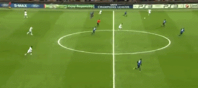
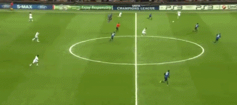
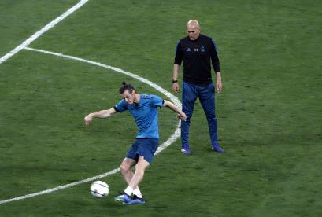

这是一段与时间赛跑的故事。
1989年7月16日，加雷斯-贝尔出生在英国威尔士的卡迪夫。10岁时，贝尔加入南安普顿青训，并展现了出众的运动天赋，14岁的贝尔已经可以在100米短跑中跑出11.4秒的成绩。

2006年4月，16岁的贝尔在南安普顿完成生涯首秀，开始了自己17年的足球之路。仅仅一个月后，贝尔就完成了威尔士国家队首秀，以16岁315天成为威尔士队史最年轻的出场球员。
2007年夏天，18岁的贝尔以1470万欧的转会费加盟托特纳姆热刺（Tottenham Hotspur）。在处子赛季，贝尔就随队赢得了近32年来的唯一一座冠军奖杯——英联杯冠军。
10-11赛季欧冠小组赛，贝尔在与国米的两回合比赛中完成3球2助攻，让全欧洲为之疯狂。关于这两场比赛有一个经典的评价：贝尔将世界第一右后卫麦孔打下神坛！
 


贝尔的成名仿佛大圣出世般惊天动地，而且贝尔的长相酷似齐天大圣孙悟空，因此中国球迷也给他取了一个“大圣”的称号。贝尔在球场上一次次腾云驾雾，追风逐电，脚踏筋斗云，神通广大。
13年夏天，皇家马德里（Real Madrid）用1.01亿欧的转会费签下了贝尔，与本泽马和C罗组成了BBC三叉戟！贝尔也是足坛转会历史上首位亿元先生。
14年国王杯决赛，贝尔在外道超车“传球给三秒后自己”，凭借过人的速度和身体素质，贝尔生吃巴尔特拉，最终贝尔脚踩风火轮一路切入禁区将皮球送进死敌大门。创造“两点之间，贝尔最短”的神话。

但是，不管在怎样的高峰，伤病都足以让一名运动员滑落。贝尔遇到了自己的一生之敌——比目鱼肌。据统计，贝尔在皇马生涯受伤30次，其中9次是比目鱼肌的受伤，这仿佛成了大圣的紧箍咒。
17-18赛季欧冠决赛，齐达内在第61分钟换下伊斯科，贝尔替补登场，仅仅两分钟后，贝尔就打进了那粒让齐达内抱头惊叹的世纪倒钩！
“此球只应天上有，人间哪得几回闻！”